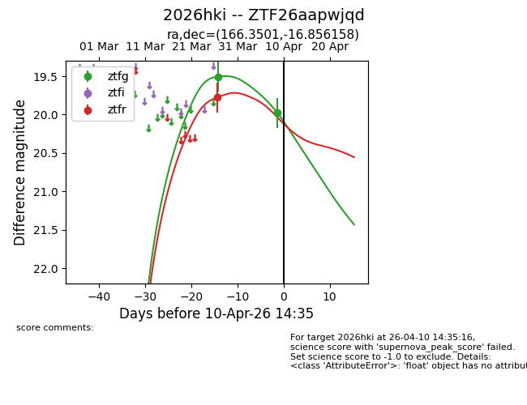
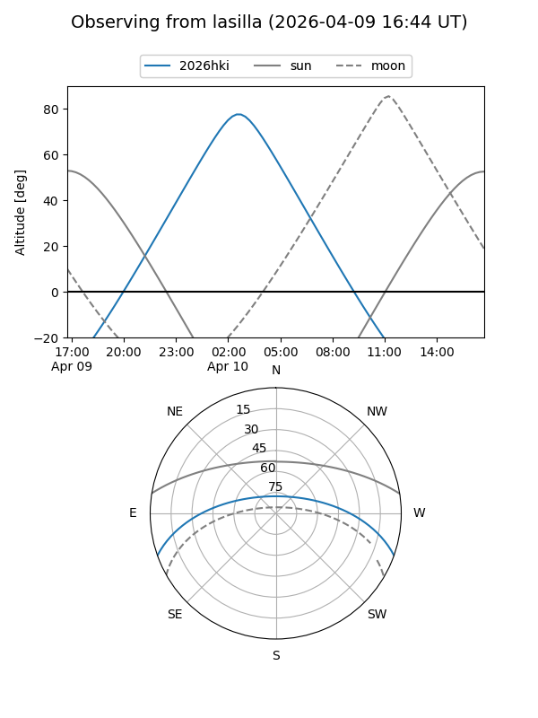
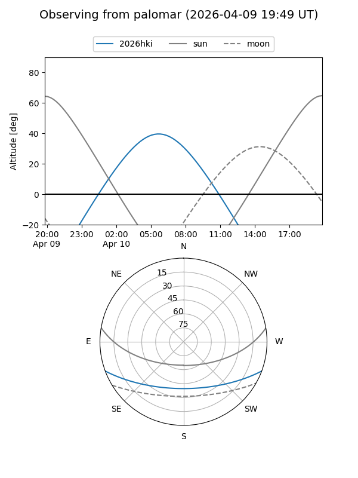
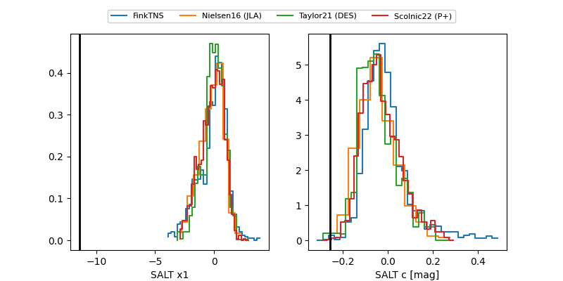

2026hki
Target 2026hki at 2026-04-10 14:44
Aliases and brokers:
FINK: link
Lasair: link
ALeRCE: link
TNS: link
YSE: link
alt names
ZTF26aapwjqd (ztf,fink_ztf)
2026hki (tns,yse)
Coordinates:
equatorial (ra, dec) = 166.3501,-16.85616
equatorial (HMS+DMS) = 11:05:24.02,-16:51:22.17
galactic (l, b) = (269.5623,+39.04842)
Flags:
Photometry:
last ztfg=19.98, ztfr=19.78
2 ztfg, 1 ztfr detections
Lightcurve

Visibility


Additional plots
